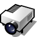
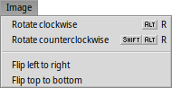
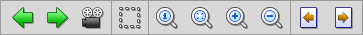

| インデックス |
| ファイル 編集 閲覧 画像 表示 属性 キーボードショートカット |
画像ビューワ (ShowImage)
| Deskbar: | 無し (通常、サポートされたファイルをダブルクリックして起動) | |
| 場所: | /boot/system/apps/ShowImage | |
| 設定ファイル: | ~/config/settings/ShowImage_settings |
画像ビューワ (ShowImage) により、データトランスレーターでサポートされているすべてのフォーマットの画像を見られます。新しいフォーマットはトランスレーターがシステムに追加されると自動的に認識されます。これはたとえば Haiku のベクターアイコンファイル、WonderBrush イメージや WebP イメージが使用可能になった際に行われてきています。
画像ビューワは編集機能はありませんが、矩形選択してそれを任意のフォーマットで保存できます。画像の回転や反転もできますが、これらの操作は物理的に画像を変更しません。それらは単に次回読み込み時に画像の回転や反転を自動的に行うことを示す属性を追加するだけです。
明らかな項目は除いて、メニューを順番にたどっていきましょう。
 ファイル
ファイル

サブメニューに最近表示した画像が表示されます。
現在の画像をそのファイルタイプをサポートする任意のアプリケーションで開きます。
サブメニューで、現在の画像を保存するフォーマットを選択できます。
背景プレファレンスを開いて、現在の画像を素早くワークスペースの背景として設定します。
編集

が有効になった場合 ̵ 同時にツールバーの破線矩形アイコンも利用可能になりますが、画像の矩形領域を選択し、それをデスクトップや任意のフォルダーへドラッグ＆ドロップして保存することができます。右マウスボタンでドラッグすれば、スニペットをドロップする際にほかの画像フォーマットを選択できるメニューが表示されるでしょう。
最初にモードを変えたくない場合は、CTRL キーを押しながら左クリックドラッグすれば、"通常モード" でもこの選択領域を作成できます。
または ESC キーで選択領域を解除します。
閲覧

画像を開くと、↑/↓ か ←/→ を押してそのフォルダー (またはクエリ結果ウィンドウ) 中のほかの画像をすばやく閲覧できます。それにあわせて Tracker ウィンドウでも選択箇所の変更を見られます。
現在の画像のフォルダーを開いてさらにその親フォルダーとサブフォルダーへすばやく移動する方法があります。現在の画像のサイズ、拡大率およびフォーマットを表示するステータスバーの情報エリアをクリックすれば、Tracker のドリルダウンナビゲートと同じように動作します。
メニューを見ると、別の閲覧タイプが表示されます。たとえば、TIFF などのイメージフォーマットは 1 つのファイルに複数のページが入っています。 や、 などのコマンドでページを移動できます。
画像
 メニューは画像ビューワに必要ないくつかの操作を提供します。それは、画像の回転と反転です。
しかし実際の画像データは変更されないことに注意してください。次に開いたときに反転または回転した状態で表示するために属性をファイルに追加するだけです。
表示

メニューは フォルダー内 (またはクエリのウィンドウ内) 画像の を開始し、 を 2 秒から 20 秒の間で設定できます。
現在表示された画像に (ウィンドウサイズを変更せずに) 適用されるほかのコマンド：
は画像を 原寸大 (100%) で表示します。
画像を拡大した後や、ウィンドウサイズを変更した後に とイメージをウィンドウフレームの中に縮めます。
と は 10% ステップで画像の拡大縮小率を変更します。拡大縮小はマウスホイールでもできます。ウィンドウより広く拡大した画像をパンするには左クリックしてマウスをドラッグします。
次の 2 つの設定は現在表示された画像だけに適用されるのではなく、ある画像から次の画像を閲覧する際にも使用されます。
は拡大縮小時に高速でフィルターをかけ、ぎざぎざを取り除きスムーズな画像を生成します。
は小さな画像をウィンドウフレーム全体に表示します。
それから、 してファイル名を画像の下に表示できる、 モードがあります。
最後に、 でグラフィックコントロールの表示 / 非表示ができます。
左から右へ: 前の画像、次の画像、スライドショーを (全画面表示で) 開始、選択モード、元のサイズ、ウィンドウに合わせる、拡大、縮小、前および後のページ (TIFF のような一つのファイルに複数のページを許可するイメージフォーマットの場合)。
頻繁に使われているコマンドの多くは、右クリックのコンテキストメニューから利用可能です。全画面表示のときに便利です。
属性

ここで現在の画像への を、1 から 10 の間で設定できます。また、choose で "未評価" (= "0") に戻せます。
Tracker 内では、評価は "Rating" 属性列に★の数として表示されます。5つ星が 10 の可能な値を示すので、結果として星半分ごとの段階となります。たとえば、評価7は 7 / 2 = 3.5 個の星: ★★★⯪☆ で表示されます。
Tracker 内でも直接評価を編集できます。ファイルを選択して、 メニューからを選択後、TAB を押して "Rating" 列へ移動します。そこで新しい数値を入力し、ENTERを押すとそれが★に変わります。
キーボードショートカット
とても便利なショートカットのリストです。
| ← / ↑ | 前の画像 | |
| → / ↓ | 次の画像 | |
| DEL | 画像をごみ箱に移動 | |
| + | 拡大 | |
| - | 縮小 | |
| 0 | 元のサイズ (100% ズーム) | |
| 1 | ウィンドウに合わせる | |
| ALT ENTER | 全画面表示の切り替え (ダブルクリックで切り替えも可能です) | |
| CTRL | CTRL を押しながら選択モードに切り替えずに選択フレームを作成できます。 |